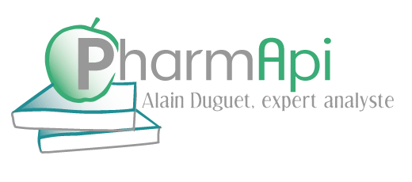

La mise en place d’un système de management de la qualité est une décision stratégique pour les organisations et une gestion appropriée des risques est indispensable à leur pérennité dans un monde globalisé ou les modes de travail et d’interactions sont en pleine évolution.
La combinaison des principes décrits par les textes ICH Q8 ICH Q9 et ICH Q10 constitue une formidable opportunité pour penser la qualité différemment dans l’industrie biopharmaceutique
La mise en place d’un système de management de la qualité relève toujours d’une décision stratégique : pour une vision de la qualité au service des patients ou clients et moteur de performance pour l’entreprise
Un intervenant extérieur peut être la clé nécessaire à la réalisation d’un diagnostic, une ressource disponible pour analyser les processus et faciliter la définition de plans d’action, leur suivi, pour travailler sur les indicateurs pertinents, définir des tableaux de bord...
Le concept de gestion des risques s’étend dans tous les domaines d’activité. La complexité croissante liée notamment à la mondialisation des activités et à l'accès étendu et rapide aux informations et données… induisent une nécessité d’évolution des méthodes de travail et des approches organisationnelles (Culture, "Mindset" et processus décisionnels)
L’intégration du processus de gestion des risques dans les systèmes qualité de l’industrie des médicaments est attendue pour la grande majorité des autorités de santé dans le monde. C’est également un requis de la norme ISO9001 dans sa version 2015
Appuyez vous sur un expert pour définir et intégrer un processus de gestion de risques qualité adapté à VOTRE organisation, à partir des textes de référence (ICHQ9 – ISO31000 ,ISO9001..) pour identifier, analyser, évaluer les risques, les mettre sous un niveau de contrôle approprié et les communiquer de façon maitrisée
Bénéficiez d’un avis externe sur le processus mis en place en interne. Evaluez le niveau de maitrise du risque associé à la gestion des partenaires, sous-traitants, fournisseurs. Investissez dans des temps de formation des équipes pour accompagner le changement de culture nécessairement associé à ce processus. Déployez des méthodologies et utilisez les outils adaptés à vos besoins (questionnaires,QQOCCCP, 5M, 5 pourquoi, AMDEC, HACCP, SWOT, cartographies, registre de risque..) Développez les outils spécifiques dont vous avez besoin (Risk Ranking and Filtering). Anticipez et rendez visible les priorités au sein de votre organisation. Adaptez vos efforts au niveau de risque !
Si les connaissances et les compétences existent dans les organisations, les connexions nécessaires à leur partage et donc à l'obtention d'un résultat sont parfois moins aisées à établir et maintenir
La participation d’un professionnel externe, neutre, mettant son expérience au service de la performance des équipes en place constitue un atout dans l’atteinte des objectifs qualité
Par exemple:
Faciliter la conduite d’analyses de risque : assurer le respect de la méthodologie, prendre en charge les aspects logistiques pour permettre aux participants de se concentrer sur leur expertise
Apporter un support méthodologique à la résolution de problème ...ou en soutien de la démarche « Quality by Design » Cartographier les risques opérationnels Développer des outils spécifiques
Revoir de façon indépendante les rapports d’analyse de risque établis par vos équipes, les rapports d’investigation complexes, les réponses apportées aux auditeurs et inspecteurs
La fabrication de médicaments stériles constitue un challenge considérable pour les industriels et représente un enjeu critique pour les patients qui en ont besoin. Je propose de renforcer ponctuellement vos équipes opérationnelles. Je peux intervenir sur l'ensemble du cycle de vie des produits , des phases amonts de projet en R&D aux phases de production industrielle.
Mon parcours professionnel de 20 ans en Recherche et Développement dans l’industrie du médicament m’a donné l’opportunité d’exercer différentes fonctions d'expertise techniques, managériales et transverses en lien avec le système de gestion de la qualité :
- Responsabilité d’un laboratoire de microbiologie
- Responsabilité d’un service de contrôle de la qualité des médicaments expérimentaux
- Responsabilité Pharmaceutique (certification de lots)
- Préparation d’audits et inspections, réalisation d'audits et diagnostics,rédaction de documents qualité
- Responsabilité d'intégration du processus de gestion de risque qualité en Recherche & Développement
- Organisation de Revues Qualité
Je suis titulaire du diplôme d’état de Docteur Pharmacie et d’un diplôme Universitaire en Pharmacie Industrielle.
J’ai le plaisir de collaborer régulièrement avec quelques cabinets de conseil partenaires. Je peux également m’appuyer sur un réseau de professionnels indépendants pouvant apporter une expertise complémentaire nécessaire à la réalisation d’une mission
